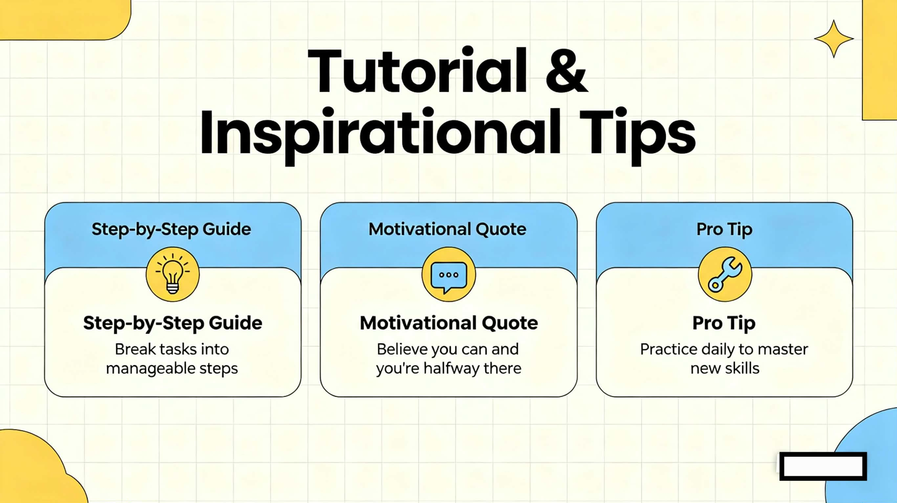

Home
Courses
Tutorials
Resources
Step-by-Step Guides

Video: Make Your Study Routine
Popular Tutorials
How to use Pomodoro Method
Effective Note Taking
Make a Weekly Study Plan
Stop Cramming – Study Smart